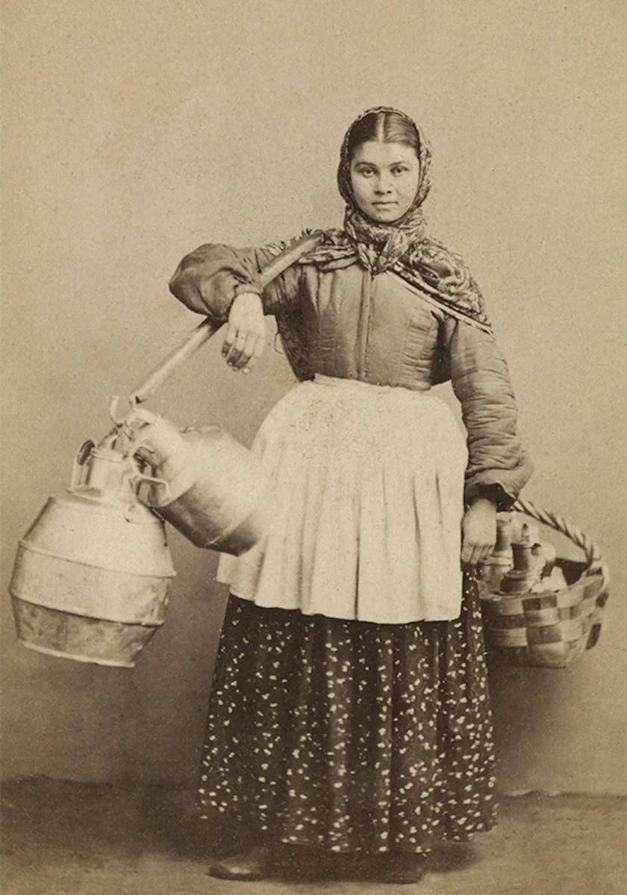

Афанасий Афанасьевич Фет
Русский поэт-лирик и переводчик, мемуарист, член-корреспондент Петербургской Академии Наук, прозаик. Природа и любовь были главными темами произведений Фета. По мнению Некрасова - единственный поэт, который мог конкурировать с Пушкиным.
Фёдор Иванович Тютчев
Русский лирик, поэт-мыслитель, дипломат и чиновник, консервативный публицист.
Роза
Афанасий Афанасьевич Фет
У пурпурной колыбели
Трели мая прозвенели,
Что весна опять пришла.
Гнется в зелени береза,
И тебе, царица роза,
Брачный гимн поет пчела.
Вижу, вижу! счастья сила
Яркий свиток твой раскрыла
И увлажила росой.
Необъятный, непонятный,
Благовонный, благодатный
Мир любви передо мной.
Если б движущий громами
Повелел между цветами
Цвесть нежнейшей из богинь,
Чтоб безмолвною красою
Звать к любви, — когда весною
Темен лес и воздух синь.
Ни Киприда и ни Геба,
Спрятав в сердце тайны неба
И с безмолвьем на челе,
В час блаженный расцветанья,
Больше страстного признанья
Не поведали б земле.
Стихотворение о природе, посвященная весне. Описание красоты розы. Счастье наступления весны. И даже плохая погода не испортит красоту роз или радостные чувства.
Рыбка
Афанасий Афанасьевич Фет
Тепло на солнышке. Весна
Берет свои права;
В реке местами глубь ясна,
На дне видна трава.
Чиста холодная струя,
Слежу за поплавком, —
Шалунья рыбка, вижу я,
Играет с червяком.
Голубоватая спина,
Сама как серебро,
Глаза — бурмитских два зерна,
Багряное перо.
Идет, не дрогнет под водой,
Пора — червяк во рту!
Увы, блестящей полосой
Юркнула в темноту.
Но вот опять лукавый глаз
Сверкнул невдалеке.
Постой, авось на этот раз
Повиснешь на крючке!
Лирический герой – рыбак. Герой с удочкой, дождавшись весны, сидит на берегу: слежу за поплавком. Никакого сюрприза, добыча видна невооруженным глазом. Далее следует ее портрет, от спины до глаз. Поэт оставляет своего героя пытать удачу. Чувствуется, что он наслаждается теплым весенним деньком «на солнышке» и рыбачит просто для удовольствия.
На заре ты её не буди
Афанасий Афанасьевич Фет
На заре ты её не буди,
На заре она сладко так спит;
Утро дышит у ней на груди,
Ярко пышет на ямках ланит.
И подушка ее горяча,
И горяч утомительный сон,
И, чернеясь, бегут на плеча
Косы лентой с обеих сторон.
А вчера у окна ввечеру
Долго-долго сидела она
И следила по тучам игру,
Что, скользя, затевала луна.
И чем ярче играла луна,
И чем громче свистал соловей,
Все бледней становилась она,
Сердце билось больней и больней.
Оттого-то на юной груди,
На ланитах так утро горит.
Не буди ж ты ее, не буди…
На заре она сладко так спит!
Кто его знает этого поэта, потому что интернет говорит, что это про умирающую девочку, а не про интересную ночку
Шепот, робкое дыханье
Афанасий Афанасьевич Фет
Шепот, робкое дыханье,
Трели соловья,
Серебро и колыханье
Сонного ручья,
Свет ночной, ночные тени,
Тени без конца,
Ряд волшебных изменений
Милого лица,
В дымных тучках пурпур розы,
Отблеск янтаря,
И лобзания, и слезы,
И заря, заря!..
Оно посвящено трагически погибшей первой возлюбленной поэта – М. Лазич. Публикация стихотворения вызвала массу критических отзывов. Многие упрекали поэта в полном отрыве от действительности и беспредметности. В вину Фета ставилась легкость и воздушность образов. Некоторые критики утверждали, что за неясными образами скрывается излишний эротизм. Самыми несправедливыми были заявления о том, что стихотворение – просто технически слабая безделка, достойная лишь бездарного рифмоплета.
Буря
Афанасий Афанасьевич Фет
Свежеет ветер, меркнет ночь.
А море злей и злей бурлит,
И пена плещет на гранит —
То прянет, то отхлынет прочь.
Все раздражительней бурун;
Его шипучая волна
Так тяжела и так плотна,
Как будто в берег бьет чугун.
Как будто бог морской сейчас,
Всесилен и неумолим,
Трезубцем пригрозя своим,
Готов воскликнуть: «Вот я вас!»
В начале произведения читатель погружается в атмосферу напряжения и нарастающей угрозы, которая доходит до кульминационного появления образа морского бога, как символа всевластной водной стихии. Стих «Буря» относится к пейзажной лирике, для которой характерен символизм и обожествление шторма, происходящие благодаря возникновению морского бога в произведении.
Я пришел к тебе с приветом
Афанасий Афанасьевич Фет
Я пришел к тебе с приветом,
Рассказать, что солнце встало,
Что оно горячим светом
По листам затрепетало;
Рассказать, что лес проснулся,
Весь проснулся, веткой каждой,
Каждой птицей встрепенулся
И весенней полон жаждой;
Рассказать, что с той же страстью,
Как вчера, пришел я снова,
Что душа все так же счастью
И тебе служить готова;
Рассказать, что отовсюду
На меня весельем веет,
Что не знаю сам, что буду
Петь — но только песня зреет.
Стих представляет собой восторженный монолог лирического героя, обращенный к своей возлюбленной. Молодого человека переполняет жажда жизни. Опьяненный любовью, он видит ее проявления повсюду. Восход солнца и начало нового дня заставляют его спешить к любимой с первым утренним приветствием. Для многих утро – начало трудового дня со своими проблемами и трудностями. Лирический герой еще не отягощен заботами. Он встречает утро с широко раскрытыми глазами и душой, каждый раз словно бы рождаясь заново. Так же неповторима для него очередная встреча с любимой, способной полностью разделить его радость.
Поэт восторгается величием гор. Некоторые критики отмечают, что можно провести аналогию Альп с человеком, у которого сильный характер. Горы сильны, они красивы в любое время. Альпы – горы великие, но Тютчев избегал лишнего пафоса, который мог бы испортить стихотворение.
Альпы
Фёдор Иванович Тютчев
Сквозь лазурный сумрак ночи
Альпы снежные глядят —
Помертвелые их очи
Льдистым ужасом разят —
Властью некой обаянны,
До восшествия Зари
Дремлют, грозны и туманны,
Словно падшие цари!..
Но Восток лишь заалеет,
Чарам гибельным конец —
Первый в небе просветлеет
Брата старшего венец.
И с главы большого брата
На меньших бежит струя,
И блестит в венцах из злата
Вся воскресшая Семья!..

Тема стихотворения – красота и благоухание весны; молодость как пора счастья. Автор показывает, что весне нужно радоваться, жить в эту пору на полную, наслаждаться каждым мгновением. Кроме того, Ф.И. Тютчев учит находить любовь и вдохновение в природе.
Весна
Фёдор Иванович Тютчев
Любовь земли и прелесть года,
Весна благоухает нам!..
Творенью пир дает природа,
Свиданья пир дает сынам!.. Дух жизни, силы и свободы
Возносит, обвевает нас!..
И радость в душу пролилась,
Как отзыв торжества природы,
Как Бога животворный глас!.. Где вы, Гармонии сыны?..
Сюда!.. и смелыми перстами
Коснитесь дремлющей струны,
Нагретой яркими лучами
Любви, восторга и весны!.. Как в полном, пламенном расцвете,
При первом утра юном свете,
Блистают розы и горят;
Как зефир в радостном полете
Их разливает аромат: Так, разливайся, жизни сладость,
Певцы!.. за вами по следам!..
Так порхай наша, други, младость
По светлым счастия цветам!..
Вам, вам сей бедный дар признательной любви,
Цветок простой, не благовонный;
Но вы, наставники мои,
Вы примете его с улыбкой благосклонной.
Так слабое дитя, любви своей в залог,
Приносит матери на лоно
В лугу им сорванный цветок!.
Тема раскрывается в чувственном монологе лирического героя, который полностью сливается с автором. Уже в первых строках герой рассказывает об убийственной любви и «слепоте страстей». Он пытается понять, почему для его любимой прекрасное чувство стало приговором. Герою удается найти ответы на поставленные вопросы: его возлюбленной пришлось отречься от общества, пожертвовать собой. Строки «Судьбы ужасным приговором твоя любовь для ней была, и незаслуженным позором на жизнь её она легла!» будто бы намекают на ту, кому посвящено произведение.
О, как убийственно мы любим
Фёдор Иванович Тютчев
О, как убийственно мы любим,
Как в буйной слепоте страстей
Мы то всего вернее губим,
Что сердцу нашему милей!
Давно ль, гордясь своей победой,
Ты говорил: она моя…
Год не прошел — спроси и сведай,
Что уцелело от нея?
Куда ланит девались розы,
Улыбка уст и блеск очей?
Все опалили, выжгли слезы
Горючей влагою своей.
Ты помнишь ли, при вашей встрече,
При первой встрече роковой,
Ее волшебный взор, и речи,
И смех младенчески живой?
И что ж теперь? И где все это?
И долговечен ли был сон?
Увы, как северное лето,
Был мимолетным гостем он!
Судьбы ужасным приговором
Твоя любовь для ней была,
И незаслуженным позором
На жизнь ее она легла!
Жизнь отреченья, жизнь страданья!
В ее душевной глубине
Ей оставались вспоминанья…
Но изменили и оне.
И на земле ей дико стало,
Очарование ушло…
Толпа, нахлынув, в грязь втоптала
То, что в душе ее цвело.
И что ж от долгого мученья
Как пепл, сберечь ей удалось?
Боль, злую боль ожесточенья,
Боль без отрады и без слез!
О, как убийственно мы любим,
Как в буйной слепоте страстей
Мы то всего вернее губим,
Что сердцу нашему милей!
Можно сказать так: поэт призывает Русь к пробуждению. Она должна убрать врагов, открыв чистый мир для славян.
Рассвет
Фёдор Иванович Тютчев
Не в первый раз кричит петух;
Кричит он живо, бодро, смело;
Уж месяц на небе потух,
Струя в Босфоре заалела.
Еще молчат колокола,
А уж восток заря румянит;
Ночь бесконечная прошла,
И скоро светлый день настанет.
Вставай же, Русь! Уж близок час!
Вставай Христовой службы ради!
Уж не пора ль, перекрестясь,
Ударить в колокол в Царьграде?
Раздайся благовестный звон,
И весь Восток им огласися!..
Тебя зовет и будит он, —
Вставай, мужайся, ополчися,
В доспехи веры грудь одень,
И с Богом, исполин державный!..
О Русь, велик грядущий день,
Вселенский день и православный!
По жанру – религиозная лирика. Лирический герой здесь выступает от имени человека вообще, через местоимение «нас». Уже с первого четверостишия автор противопоставляет суету, цинизм, практичность вере в чудеса. Она неистребима из сердца человека, слишком много необъяснимого вокруг – надо только уметь замечать.
Чему бы жизнь нас ни учила
Фёдор Иванович Тютчев
Чему бы жизнь нас ни учила,
Но сердце верит в чудеса:
Есть нескудеющая сила,
Есть и нетленная краса.
И увядание земное
Цветов не тронет неземных,
И от полуденного зноя
Роса не высохнет на них.
И эта вера не обманет
Того, кто ею лишь живет,
Не всё, что здесь цвело, увянет,
Не всё, что было здесь, пройдет!
Но этой веры для немногих
Лишь тем доступна благодать,
Кто в искушеньях жизни строгих,
Как вы, умел, любя, страдать.
Чужие врачевать недуги
Своим страданием умел,
Кто душу положил за други
И до конца всё претерпел.
